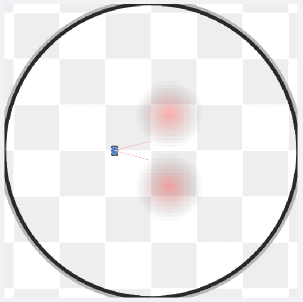

Surviving in Buridan's World
Buridan's ass is a centuries-old thought experiment: a donkey stands exactly midway between two identical, equally appetizing bales of hay. With no reason to prefer either one, it can never decide — and starves to death standing still.
This tutorial picks up from Braitenberg Vehicle III and puts its "love" circuit in exactly that bind: two gradient patches, placed as mirror images of each other, with one patch ever so slightly stronger than the other. You'll see the direct wiring from Vehicle III fail to resolve even a large difference, then build two more vehicles — Waverer and Rivalry — each using the same sensory machinery more cleverly to push the resolution limit further.
What you will build
| Step | What happens |
|---|---|
| Add a second, mirrored patch | Two A patches, equidistant from the robot |
| Confirm the tie | With both patches identical, the robot drives straight between them forever |
| Set a quantity difference | One patch at 1.0, the other swept from 0.9 down — find where Vehicle III fails |
| Widen the steering wiring | Builds Waverer: a pure left-vs-right comparator |
| Run Waverer | Find the quantity difference it can no longer resolve |
| Insert a competing pair | Builds Rivalry: mutual inhibition that commits to one side |
| Run Rivalry | Find its resolution limit — smaller than Waverer's |
Background — a tie needs something to break it
Every circuit you've built so far is purely feedforward: a sensor reading flows straight to a motor command, deterministically. Put two identical stimuli in front of the robot, symmetric left and right, and the circuit has nowhere to go — equal inputs produce equal outputs, forever.
Breaking a tie needs two things: an amplifier that turns a small difference into a growing one, and a seed to start from. The amplifier is mutual inhibition — two neurons that suppress each other. The seed, in this tutorial, is a real difference in the world: one patch is fractionally stronger than the other. The question is how small that difference can be and still reliably steer the robot.
Step 1 — Reopen your Vehicle III network
Launch the simulator and reopen the network you built in Vehicle III, with light (a GradientSensor, n=2, gradient='A') wired for approach — cruise (a ConstantLayer, value 60) feeding motor directly, and light inhibiting motor same-side (Vehicle III, Step 5).
Keep light's noise_std = 0 throughout this tutorial — you want the only asymmetry to come from the world, not from sensor noise.
Skipped Vehicle III?
Build that starting point first: a GradientSensor named light (n=2, gradient='A', scale=60), a ConstantLayer named cruise (n=2, value=60) wired to motor with the identity matrix, and light → motor wired same-side with weight −1 on the diagonal. See Braitenberg Vehicle III for the full build.
Step 2 — Give it two identical choices
- Go to the World tab. If you don't already have an
Apatch placed ahead of the robot, place one now (as in Vehicle II/III). - Hold Ctrl and drag the patch — this clones it, the same size and colour, following your cursor while the original stays put.
- Hold Shift at the same time to snap both the original and the clone to the grid. Drop the clone so it mirrors the original across the robot's forward axis — same distance, opposite side.

Give it room
If the arena feels cramped with two patches in it, increase arena_scale in the Physics tab so the robot has more distance to react before it reaches either one.
Step 3 — Confirm the tie
Press ▶ Run. With both patches at their default quantity (1.0) and no sensor noise, the two eyes always read exactly the same value. The robot drives straight between the patches and never turns. This is Buridan's ass at its most literal: perfectly symmetric, perfectly stuck.
Step 4 — Set a quantity difference
Double-click one of the patches and leave its quantity at 1.0. Double-click the other and set its quantity to 0.9 — it now peaks at 0.9 instead of 1.0 at its centre, while looking identical on screen.
What patch quantity does
Quantity is a multiplier on the patch's signal before the sensor reads it. A patch with quantity q produces a reading of q × r where r is the raw distance-based gradient value in [0, 1]. The two patches are otherwise identical in size, position, and label — only the quantity differs.
Press ▶ Run. The robot should now reliably turn toward the stronger patch. Then tighten the difference: set the second patch to 0.99, run again. Then 0.999, then 0.9999. At some point Vehicle III stops committing reliably before reaching either patch — record that threshold. This is the resolution limit of plain same-side inhibition.
Step 5 — Widen the steering wiring: Waverer
One of evolution's recurring solutions to telling two similar stimuli apart is to rewire the same inputs so that small differences are amplified rather than passed through unchanged. In Vehicle III each motor neuron listens to only one eye; adding a crossed excitatory term means each motor neuron now receives excitation from one eye and inhibition from the other — the motor layer becomes the comparator, and what drives it is no longer each eye's absolute reading but the difference between them.
- In the network visualizer, right-click the
light → motorconnection and choose Edit weight…. -
Switch to Manual and enter:
light_0(left)light_1(right)motor_0(left wheel)−1 +1 motor_1(right wheel)+1 −1 -
Confirm and Save.
Call this vehicle Waverer — a robot that wavers between two choices, pulled equally by both. It already embodies a key evolutionary strategy: suppress the common signal, amplify the difference. But it has no memory and no way to sharpen a difference that is too small to act on.
Writing Δ = light_0 − light_1, the matrix gives left = 60 − Δ, right = 60 + Δ. Total speed stays fixed at 120; only its split between the wheels changes.
Press ▶ Run starting from the quantity difference that defeated Vehicle III. Keep tightening the difference — 0.99, 0.999, 0.9999 — until Waverer also fails. That is Waverer's resolution floor, and exactly the problem the next steps address.
Step 6 — Insert a competing pair: Rivalry
In Waverer there is no decision as such — the motor neurons receive sensory input and move. The "choice" is the motor output itself, happening at the last possible moment, with no internal deliberation before it. One of evolution's key innovations was to push that process upstream: to create circuits inside the brain that compete, settle on an outcome, and only then instruct the motor system what to do. The sensor readings go in; a committed signal comes out; the muscles just follow.
- Delete the existing
light → motorconnection from Step 5. - Drag an AdaptiveLayer chip onto the canvas, between
lightandmotor. Name itchoice, setn = 2. -
In
choice's settings set:tau_rise→0.1,tau_decay→0.1w→1.0— the cross-inhibition weight: each neuron subtracts the other's output from its own input.beta→0.0—AdaptiveLayerdefaults this to1.0, which turns on fatigue: a neuron that fires strongly for too long gradually suppresses itself, producing burst-and-fade behaviour. That is biologically important — it prevents any single neuron from monopolising the circuit indefinitely — but here you want the winner to hold its lead, not tire out. Setbetato0sochoiceonly competes, with no fatigue on top.
Fatigue and oscillators
When both
wandbetaare nonzero, the same mutual-inhibition circuit stops locking and starts alternating — each side wins, fatigues, loses, recovers, and wins again. That rhythm is the basis of a central pattern generator, the kind of circuit that drives walking, swimming, and breathing in real animals. It is a topic for another session; see AdaptiveLayer if you want to explore it now. -
Wire
light → choice, same-side only:light_0(left)light_1(right)choice_0+1 0 choice_10 +1 -
Wire
choice → motor, same-side inhibitory:choice_0choice_1motor_0(left wheel)−1 0 motor_1(right wheel)0 −1 -
Save.
choice_0 is excited by the left eye and inhibited by choice_1's output; choice_1 is the mirror image. Whichever one edges ahead suppresses the other a little more than it's suppressed back, letting it edge further ahead: a positive feedback loop. Because choice's activation is relu, the losing neuron is floored at zero and can't recover — the decision sticks.
This is Rivalry: recurrent mutual inhibition, winner-take-all.
Step 7 — Run Rivalry: find its resolution limit
Press ▶ Run starting from the quantity difference that defeated Waverer. Rivalry should commit to the stronger patch. Keep tightening — 0.999, 0.9999, 0.99999 — until Rivalry also fails to commit reliably.
Open the oscilloscope on choice_0 and choice_1 while it runs: you'll see both rise together briefly, then diverge — one to its ceiling, the other clamped at zero. The stronger patch wins consistently because the quantity difference gives one competitor a persistent head start, not a random one.
Oscillations after the decision
Once Rivalry commits, the robot curves hard toward the chosen patch — but as it closes in, the winning eye's signal grows and the same-side inhibition on the motor overdraws, causing overshoot and oscillation. The decision is stable; the approach is not. To damp it, increase tau_rise and tau_decay on choice so the competition integrates over time rather than reacting to every fluctuation.
Challenges
Challenge 1 — Bump, back up, turn away
Build a vehicle that drives forward by default and, on collision, backs away and turns away from the side that made contact, then resumes. Use a CollisionSensor (see CollisionSensor) in place of light.
This circuit needs noise
With a CollisionSensor there are no gradient patches to create an asymmetry — both bumpers are equally likely to fire first in a head-on collision. Set light's noise_std to a small value (try 0.05) so tiny random differences between the two bumper readings are enough to tip the turn direction. noise_std on the CollisionSensor plays the same role the patch quantity difference played in the main tutorial: it seeds the asymmetry the circuit then amplifies.
Split forward and backward into separate pathways
Give motor two separate drives: a forward pathway fed only by cruise, and a backward pathway fed only by the collision sensor, wired same-side or crossed depending on which way you want it to turn while backing away.
The sensor goes quiet before the response should
A bumper is a digital signal — it reads 1 while contact is live and drops back to 0 the instant it breaks. By the time the robot has reversed even slightly, the sensor is already silent, long before the robot is actually clear. Insert a dynamics layer between the sensor and the backward pathway and set tau_decay much longer than tau_rise: the layer charges fast on contact and drains slowly after, holding the reverse command alive long enough to actually escape. As an extra challenge, think about how to introduce an asymmetry so that one wheel backs away more than the other when both bumpers fire at once — giving the robot a preferred turning direction even in a head-on collision.
Challenge 2 — Take it to the real robot
Once Challenge 1 works in simulation, run the same network on physical hardware — see Running Networks on the Real Robot. Set robot_address on the sensor and on motor. A CollisionSensor with n=2 matches the real robot's two bumpers directly; no rewiring needed.
Bumper address
Set the CollisionSensor's robot_address to 192.168.0.224:2390/bumpers[iiiii](1,2) — indices 1 and 2 are the front-left and front-right bumpers (index 0 is the packet counter). See Running Networks on the Real Robot for the full packet layout.
Challenge 3 — Amplify the difference further
New circuits need tuning — and so did evolution
Adding a new pathway on top of an existing one rarely works out of the box. The weights, time constants, and scales of the new circuit have to be balanced against those already there, or the old behaviour breaks. This is not a quirk of simulation — it is exactly the pressure evolution faced every time a new circuit was added to an existing brain. Natural selection had to find weight combinations that preserved what worked while allowing something new to emerge. Expect to spend time rebalancing; that tuning effort is part of what you are learning.
There are several ways to push the circuit's resolution limit even further. Try one or more of the following, and compare how each one shifts the smallest quantity difference the robot can still resolve:
- Contralateral input to
choice. Thelight → choiceconnection is same-side only — each eye feeds its own competitor. Add a crossed inhibitory term so each eye also suppresses the rival competitor before the competition even starts, sharpening the initial asymmetry. - Waverer and Rivalry in parallel. Nature rarely replaces one circuit with another — it layers new ones on top. Restore the direct
light → motorcomparator from Step 5 alongside the existingchoice → motorpathway. The motor neurons now receive two independent votes: one fast and feedforward, one slow and recurrent. - Feed the decision back to the sensors. Wire
choiceback ontolight— crossed and inhibitory — so the winning side suppresses the losing eye's own signal at its source. This is inhibition of lateral inhibition: the winner starves the loser of input rather than just out-competing it downstream. Tighten the quantity difference to find whether this lets the circuit resolve differences that defeat plain Rivalry.
Sensors can be connection targets too
Every sensor has a neuron stage after its raw reading that the network reads from. You can wire onto a sensor exactly like a layer — the connection sums into that stage. See Sensors — neuron stage. light's neuron stage is pass-through by default; no settings changes needed.
What to try next
- Wiring Brains — more general-purpose layer types and wiring patterns, including other ways dynamics layers reshape a sensor's signal before it reaches the motors.
- AdaptiveLayer — the full layer reference, including the half-centre oscillator mode (
beta > 0together withw > 0) this tutorial deliberately avoided. - Creating Worlds — all the patch, obstacle, and duplication/grid-snap tools used in Step 2.